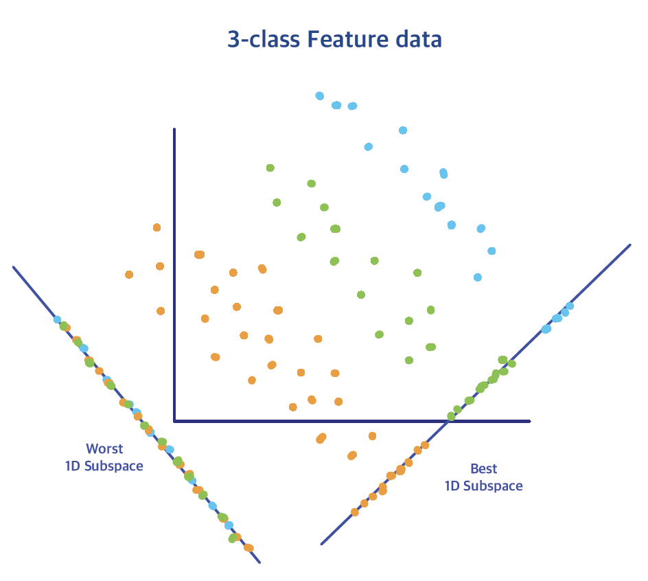
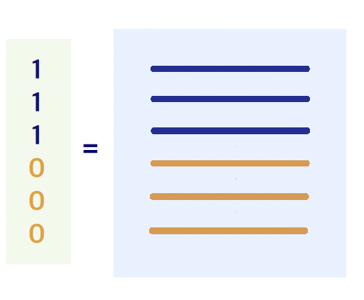

6.2 Fisher Discriminant Analysis (FDA)
Supervised dimension reduction

We want to find a direction such that the projection of data (of multiple classes) onto this direction is well separated, that is the group means of \(\mu_i\)s are far apart from each other, and within each group, the variation/spread is small, i.e., maximize the following ratio \[\frac{\text{Between group variation}}{\text{Within group variation}} = \frac{a^T B a}{a^T W a}\]
The matrices \(B\) and \(W\) are the within-class & between-class sample covariance matrices, defined by \[\begin{align*} W_{p\times p} &= \frac{1}{n-K} \sum_{k=1}^{K} \sum_{i:y_i=k} (\mathbf{x}_i - \hat{\mu}_k) (\mathbf{x}_i - \hat{\mu}_k)^T\\ B_{p\times p} &= \frac{1}{K-1} \sum_{k=1}^{K} n_k (\hat{\mu}_k - \bar{\hat{\mu}}_k) (\hat{\mu}_k - \bar{\hat{\mu}}_k)^T \end{align*}\]
If we re-write \(x_i\)s as follows \[\begin{align*} x_1 &= x_1 - \hat{\mu}_{y_1} + \hat{\mu}_{y_1}\\ x_2 &= x_2 - \hat{\mu}_{y_2} + \hat{\mu}_{y_2}\\ \ldots &= \ldots \\ x_n &= x_n - \hat{\mu}_{y_n} + \hat{\mu}_{y_n} \end{align*}\] we can think of \(W\) as the sample covariance matrix over \(x_i - \hat{\mu}_{y_i}\) (same as the pooled sample covariance matrix \(\hat{\Sigma}\) in LDA), and \(B\) as the sample covariance matrix over the \(K\) class centers \(\hat{\mu}_{y_i}\).
Generalized Eigenvalue Problem
\[\max_a \frac{a^T B a}{a^T W a} \,\, \Rightarrow \,\, \max_a \left( a^T B a \right) \,\, \text{ subject to }\,\, a^TW a =1 \]
Assume \(W=U D^2 U^T\), and define \(b= W^{1/2} a\), where \(W^{1/2}:= U D U^T\) is symmetric. The inverse of \(W^{1/2}\) computes as \(W^{-1/2} = U D^{-1} U^T\). Therefore,
\[\begin{align*} a^T B a &= a^T \; W^{1/2} W^{-1/2}\; B\; W^{-1/2} W^{1/2}\; a\\ &= (W^{1/2} a)^T \; W^{-1/2} B W^{-1/2}\; (W^{1/2} a)\\ &= b^T W^{-1/2} B W^{-1/2} b \end{align*}\] subject to \(||b||^2 = 1\). The optimization above is a classical eigenvalue problem! In this problem, we can solve the directions sequentially as follows:
\(b_1 =\) the 1st eigenvector of matrix \(W^{-1/2} B W^{-1/2}\), then solve \(a_1 = W^{-1/2} b_1\).
\(b_2 =\) the 2nd eigenvector of matrix \(W^{-1/2} B W^{-1/2}\), then solve \(a_2 = W^{-1/2} b_2\).
Although \(b_j\)s are orthonormal, the \(a_j\)s are not: \[\begin{align*} b_j^T b_j &= 1, \quad a_j^T W a_j = 1\\ b_j^T b_{\ell} &= 0, \quad a_j^T W a_{\ell} = 0 \end{align*}\]
We can extract at most \((K-1)\) directions, since the rank of \(B\) is \((K-1)\). The \((K-1)\) directions span exactly the same space as the one from the reduced rank LDA.
LDA vs. FDA
Linear Discriminant Analysis (LDA) is primarily a classifier, whereas Fisher Discriminant Analysis (FDA) is a dimension reduction method: it identifies a set of directions rather than providing a classification rule. Although FDA does not explicitly assume that the data are normally distributed, the subspace it produces often resembles the reduced space obtained from LDA. This similarity arises because FDA implicitly assumes that the data in each group are approximately normally distributed with the same covariance matrix. FDA is a supervised dimension reduction technique, in contrast to Principal Component Analysis (PCA), which is unsupervised. Moreover, FDA can be applied to regression problems as well. However, care must be taken to avoid overfitting, particularly in high-dimensional settings.
Risk of Overfitting

Consider an example where you only have \(n=6\): 3 of the observations are from group 1 (blue), and the other 3 from group 2 (orange). In this case, the projection results in a clear separation between the two classes:
Class one points project to 1.
Class zero points project to 0.
This separation arises not due to meaningful features but because the feature dimension matches the sample size \(n\).
When the feature dimension equals the sample size, we can generate an \(n \times n\) design matrix and find a direction in the \(n\)-dimensional space that effectively separates the classes, even if the features are random noise.
This can be remedied if we use:
L1 Penalty: Add L1 regularization to the optimization problem when estimating covariance matrices or their inverses and mean vectors. This encourages sparsity in the estimated parameters.
Assume Independence: Assume that the p-dimensional density function is composed of independent components. This implies that the covariance matrix (sigma) becomes diagonal. This approach is known as Naive Bayes and can help address high-dimensional overfitting.